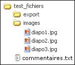

Pour les exemples, nous utiliserons le dossier test_fichiers
avec le contenu et l'arborescence ci-contre.
Ce dossier se trouve dans le dossier test du tutoriel. Vous pouvez
voir son contenu avec le bouton dans la
barre de menu du tutoriel.
Si vous ne voyez pas ce dossier, ou si vous voulez le ré-initialiser
utilisez
ce script.
Parmi toutes les
informations que nous pouvons obtenir sur un fichier, voici celles
utilisées le plus souvent :
Remarque : pour une liste exhaustives des fonctions d'information,
voir la
documentation technique.
On remarquera que la fonction filesize()
appliquée à un dossier ne renvoie pas sa taille mais 0.
La date de dernière modification est un timestamp qui peut être
formatée avec la fonction date()
(par exemple : date('d/m/Y
H:i:s',filemtime($fichier));).
Les permissions doivent être décodées en utilisant l'opérateur de
bits & comme dans l'exemple suivant.